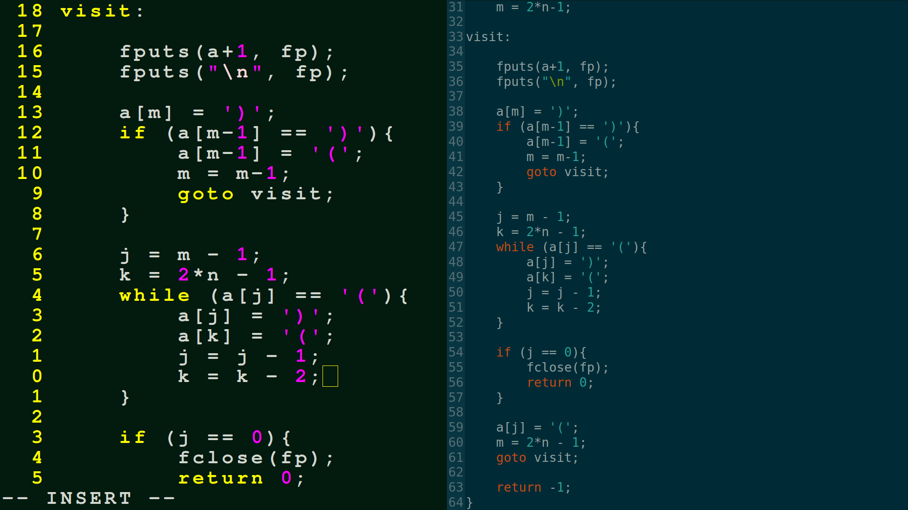

./txt/tools/text_editors.txt
One of the first questions when starting to code is : where should I write my code?
Different programmers have very different preferences:
Some enjoy advanced systems like Eclipse or Atom or Visual Studio
some enjoy the simplicity and speed of a text editor like VIM
some enjoy the control and versatility of EMACS
some want to keep it simple and just use notepad
other favorites are notepad++, sublime text, nano...
None of these cost money either, they are free for you to use to try to make the world better with programming. All of them (except maybe notepad) probably require a 10 minute tutorial video to learn how to use. You won't have trouble finding them online.
I think that using a basic editor when starting out is better for memorization. It doesn't give you hints all the time like the IDE! and it's simpler to use. Editors like VIM work right out of the terminal, which means it starts up and closes very fast.
Ideally, you should be able to write a program on a piece of paper, edit it there, copy it into the computer, and it will be running. Be patient if you want to work to this level.
Some editors will make special key words light up in a different color. This is only a cosmetic thing, and the actual program is no different than if it had been written in plain black times new roman. Still, it looks cool and is often helpful in pointing out choose colors and fonts that you like. It really makes the experience nicer if you are not just staring at a white screen, and it's better for your eyes!
No matter what software you choose, or what colors, remember that the "code" you write these days is just text, and even shares many cruical words with the english language. The only real difference between a computer program, and a shopping list you wrote in notapad, is that one of them is written in a language that the computer can interpret, and has a special extension (like .py or .html). In fact, on linux machines, extensions are not enforced, so there is really no fundamental difference to the computer between a picture, a history essay, a song, and a computer program. They are all just bytes. In fact, you can use a basic text editor to open an image and it will try to interpret the image as text. Similarly, if you tell python to open it, and it will try to interpret it as a python program.
assignment:
1. find a text editor you like
2. set a comfortable font size
3. choose colors you like
advanced topics:
what is actually happening when you "write" text to your computer?
every letter has some binary encoding in an encoding scheme:
in ascii, the value of A is 65 or 1000001 in binary.
the value of B is 66 or 1000010
C is 67 or 1000011
D is 68 or 1000100
standard charcters take up one byte on the computer, so this A
would be stored somewhere as 01000001
the "word" ABCD would be stored as 01000001010000100100001101000100
How does the computer know where one letter ends and the other begins?
It just knows to grab them by 8's when it is reading text.
now what does it mean to "store" 01000001
if you're writing to a cd, you actually burn the pattern into the surface
if its a solid state drive, tiny switches are magnetically "flipped" to hold that pattern.
An actual physical change is being made when you write something in a computer, even though it feels like what you are writing is not "physical".
A sequence of these 8 digit patterns makes up a computer program, or a poem.